SingleCellTK - Console Analysis Tutorial
Yichen Wang
Source:vignettes/articles/console_analysis_tutorial.Rmd
console_analysis_tutorial.RmdIntroduction
Single Cell Toolkit (singleCellTK, SCTK) is a package that works on single-cell RNA-seq (scRNAseq) dataset. SCTK allows users to import multiple datasets, perform quality control and a series of preprocessing, get clustering on cells and markers of clusters, and run various downstream analysis. Meanwhile, SCTK also wraps curated workflows for celda and Seurat.
This tutorial will take the real-world scRNAseq dataset as an example, which consists of 2,700 Peripheral Blood Mononuclear Cells (PBMCs) collected from a healthy donor. This dataset (PBMC3K) is available from 10X Genomics and can be found on the 10X website.
SCTK uses the SingleCellExperiment (SCE) object for management of expression matrices, feature/cell annotation data, and metadata. All of the functions have an SCE object as the first input parameter. The functions operate on a matrix stored in the assay slot of the SCE object. The parameter useAssay can be used to specify which matrix to use (the default is "counts"). Matrices can be of class matrix or dgCMatrix from the Matrix package.
Import Data
SCTK has wrapper functions for importing count matrix from the output of many types of processing tools. See the documentation for importing data for more detail. Here we use importExampleData() to load PBMC3k data from the Bioconductor package TENxPBMCData.
library(singleCellTK)
sce <- importExampleData("pbmc3k")Importing CellRanger Output Data
Here, we briefly introduce the approach to importing the output of the widely used preprocessing tool, cellranger. SCTK has a generic function importCellRanger() for this purpose, and, explicitly, importCellRangerV2() and importCellRangerV3() for different versions of cellranger. For the detail of these functions, please click on the function names to be redirected to the reference page.
The input arguments basically asks users what the exact paths of the input data files are (i.e. "matrix.mtx", "features.tsv", and "barcodes.tsv"). They are cellRangerDirs, sampleDirs, cellRangerOuts, matrixFileNames, featuresFileNames and barcodesFileNames. And the function will identify the specified path, for example, of the barcode file, as a combination of: {cellRangerDirs}/{sampleDirs}/{cellRangerOuts}/{barcodesFileNames}. Theses functions automatically try to recognize a preset substucture of cellRangerDirs, so that in most of the cases, users only need to specify cellRangerDirs to tell where the top level directory of the output is. However, sometimes the three essential files may be placed or named in a different way and the default detection method won’t find them. In this case, users will need to check the exact paths and manually specify the correct input according to the combination rule above and the error messages.
An example folder structure:
./datasets/
sample1/
outs/filtered_feature_bc_matrix/
barcodes.tsv.gz
features.tsv.gz
matrix.mtx.gz
sample2/
outs/filtered_feature_bc_matrix/
barcodes.tsv.gz
features.tsv.gz
matrix.mtx.gz
./otherCellRangerData/
barcodes.tsv
genes.tsv
matrix.mtx
# Default use case
sce <- importCellRanger(cellRangerDirs = "dataset")
# In case the three files are placed in a different way
sce <- importCellRanger(sampleDirs = "otherCellRangerData",
cellRangerOuts = "",
barcodesFileNames = "barcodes.tsv",
featuresFileNames = "genes.tsv",
matrixFileNames = "matrix.mtx")Quality Control (QC)
Running QC methods
Quality control and filtering of cells is often needed before down-stream analyses such as dimensionality reduction and clustering. Typical filtering procedures include exclusion of poor quality cells with low numbers of counts/UMIs, estimation and removal of ambient RNA, and identification of potential doublet/multiplets. Many tools and packages are available to perform these operations and users are free to apply their tool(s) of choice.
To perform QC, we suggest using the runCellQC() function. This is a wrapper for several methods for calculation of QC metrics, doublet detection, and estimation of ambient RNA. Below is a quick example of how to perform standard QC before heading to downstream analyses. If you have another preferred approach or your data has already been QC’ed, you can move to Feature Selection section. For this tutorial, we will only run one doublet detection algorithm (scDblFinder) and one decontamination algorithm (decontX). For a full list of algorithms that this function runs by default, see ?runCellQC. We will also quantify the percentage of mitochondrial genes in each cell as this is often used as a measure of cell viability.
# Get list of mitochondrial genes
sce <- importMitoGeneSet(sce, reference = "human", id = "symbol",
by = "rownames", collectionName = "mito")
# Run QC
sce <- runCellQC(sce, sample = NULL,
algorithms = c("QCMetrics", "scDblFinder", "decontX"),
collectionName = "mito",
geneSetListLocation = "rownames")
sce <- getUMAP(inSCE = sce, reducedDimName = "QC_UMAP", seed = 12345)Note: If you have cells from multiple samples stored in the SCE object, make sure to supply the sample parameter as the QC tools need to be applied to cells from each sample individually.
Visualization
Individual sets of QC metrics can be plotted with specific functions. For example to plot distributions of total numbers of UMIs derived from runPerCellQC(), doublet scores from runScDblFinder(), and contamination scores from runDecontX() (all of which were run by the runCellQC() function), the following plotting functions can be used:
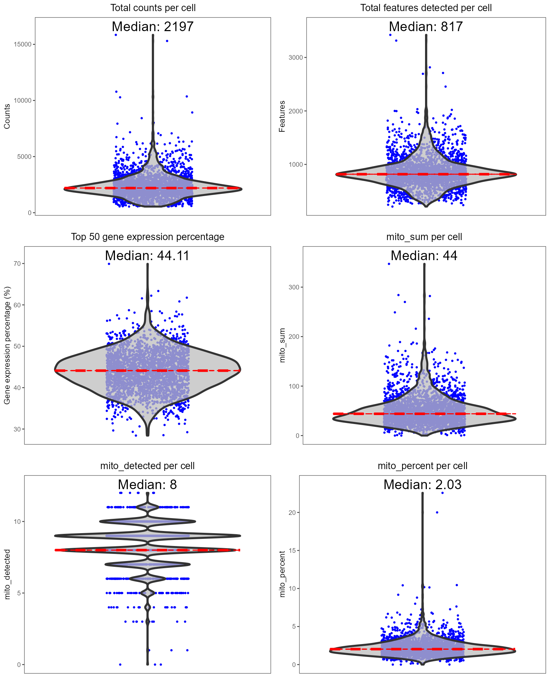
plotScDblFinderResults(sce, reducedDimName = "QC_UMAP")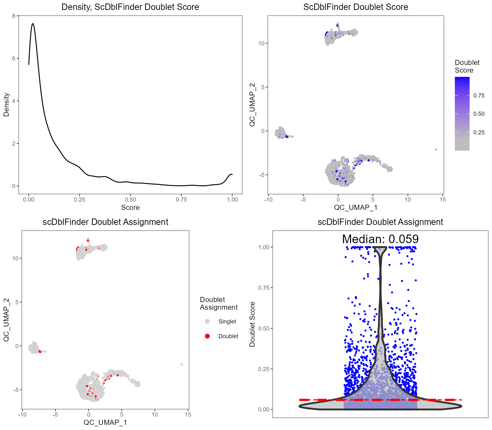
plotDecontXResults(sce, reducedDimName = "QC_UMAP")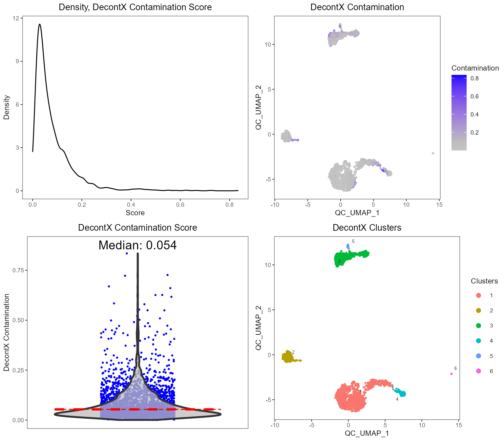
A comprehensive HTML report can be generated to visualize and explore the QC metrics in greater detail:
reportCellQC(sce)Filtering
After examining the distributions of various QC metrics, poor quality cells will need to be removed. Typically, thresholds for QC metrics should exclude cells that are outliers of the distribution (i.e. long tails in the violin or density plots). Cells can be removed using the subsetSCECols() function. Metrics stored in the colData slot of the SCE object can be filtered using the colData parameter. Here we will limit to cells with at least 600 counts and 300 genes detected, doublet score no more than 0.9, and at most 5% of mitochondrial genes detected:
sce <- subsetSCECols(sce, colData = c("total > 600", "detected > 300",
"scDblFinder_doublet_score < 0.8",
"mito_percent < 5"))
# See number of cells after filtering
ncol(sce)## [1] 2528Normalization
After removing cells of low quality, we next need to normalize the feature expression matrix. SCTK has a generic wrapper function for various types of normalization, called runNormalization(). In this tutorial, we apply a global-scaling normalization method from scater, "logNormCounts". It normalizes the feature expression for each cell by the total expression, multiplies this by a scale factor, and log-transforms the result. Afterwards, we recommend running a z-score scaling on the log-normalized matrix prior to dimensionality reduction.
sce <- runNormalization(sce, useAssay = "counts", outAssayName = "logcounts",
normalizationMethod = "logNormCounts")
sce <- runNormalization(sce, useAssay = "logcounts",
outAssayName = "logcounts_scaled", scale = TRUE)SCTK also supports a number of batch correction methods. Here we don’t present the workflow because PBMC3k dataset only has one batch. For examples, please refer to the document of batch correction.
Variable Feature Selection
Selecting highly variable genes (HVG) for downstream analyses is recommended, since a subset of variable features can speed up the computation and reduce the noise being introduced. SCTK wraps the methods used in Seurat and Scran. We recommend keeping at least 2,000-5,000 HVGs. In the example code, we use the “VST” method from Seurat, and select the top 2,000 genes.
sce <- runSeuratFindHVG(sce, useAssay = "counts", hvgMethod = "vst")
sce <- getTopHVG(sce, method = "vst", n = 2000, altExp = "hvg")
plotTopHVG(sce, method = "vst")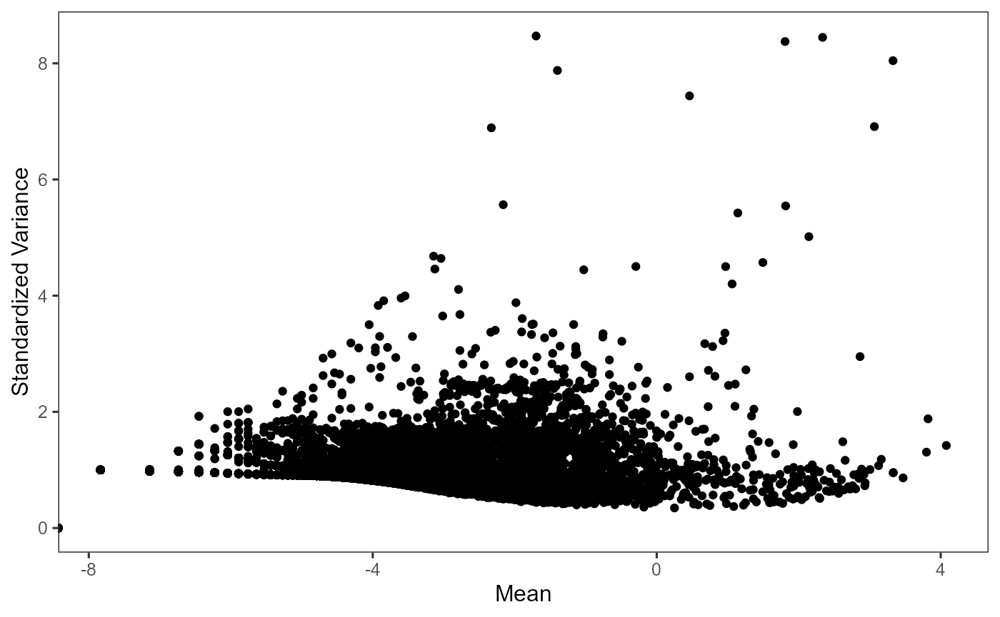
Note: The row-subsetted matrix is stored in the “alternative experiment” slot (
altExp) within the SCE object. This allows for a matrix with a different number of rows to be stored within the same SCE object (rather than creating two SCE objects). Some of the SCTK functions described in the next several sections will operate on a matrix stored in thealtExpslot. The list of alternative experiments in an SCE can be view withaltExpNames(sce). In the future, there will be update to utilize the ExperimentSubset package for simpler operation on the subsets.
Linear Dimension Reduction
Although we have selected variable features, we would like to further reduce the noise. The next step is performing a principal component analysis (PCA), which creates new uncorrelated variables that successively maximize variance and finally increases the data interpretability but at the same time minimizes the information loss.
In this tutorial, we use the wrapper function scaterPCA(), which comes from Scater. This function allows users to directly use a full-sized feature expression assay, as well as a subsetted expression matrix. Here, we will use the HVG selected in the last section and feed it to useAltExp argument.
SCTK also supports Seurat’s PCA and ICA method, which do a similar job. For Seurat methods, please refer to our Seurat Curated Workflow.
sce <- runDimReduce(inSCE = sce, method = "scaterPCA",
useAssay = "logcounts_scaled", useAltExp = "hvg",
reducedDimName = "PCA", seed = 12345)
plotDimRed(sce, useReduction = "PCA")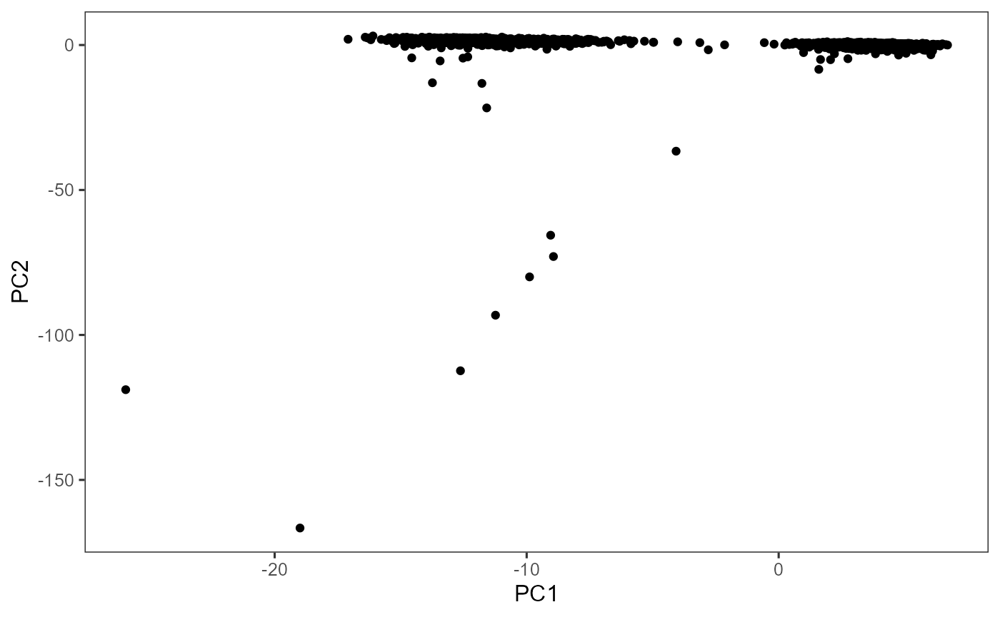
Note: When using
useAltExpargument in SCTK functions, users should also be aware of theuseAssayargument. Usually when both are available, using onlyuseAssaymeans using a full-sized feature expression matrix; usinguseAssayanduseAltExpin the same call means using a subsetted expression matrix. In the latter scenario,useAltExppoints to the alternative experiment stored inaltExpslot of the SCE object, anduseAssaypoints to theassayslot in the alternative experiment object.
Clustering
Running SNN graph based clustering
SCTK supports clustering cells with Shared Nearest Neighbors (SNN) graph based methods and K-Means algorithm. For SNN graph based methods, we wrap the graph constructor from scran library, and have options of algorithms from igraph that can perform clustering on the graph. The result of clustering will be stored in the colData slot with variable name set by clusterName.
Similarly as the steps above, runScranSNN() allows various types of input matrix, including log-normalized a full sized feature expression matrix or a subset of it, as well as a dimension reduction matrix. In this tutorial, we will use the PCA embedding generated in the previous section.
sce <- runScranSNN(sce, useReducedDim = "PCA", clusterName = "cluster", algorithm = "louvain", k = 4)Meanwhile, in the Seurat Curated Workflow, the clustering is also done with an SNN graph, but the wrapper function alone, runSeuratFindClusters(), would be hard to use out of the curated workflow.
In the other curated workflow that SCTK wraps, Celda Curated Workflow, we use a Bayesian hierarchical model that can bi-cluster features into modules and observations into subpopulations. For detail of this method, please refer to the Celda Documentation.
Visualization with UMAP
Uniform Manifold Approximation and Projection (UMAP) is one of the most commonly used methods to visualize the relationships between the cells in a 2-D embedding. This can be done using the function getUMAP(), which is a wrapper of scater::calculateUMAP() method. The result will be saved in reducedDim slot.
Following the steps above, we will now use useReducedDim argument to pass the PCA embedding just generated to the function. This wrapper function also allows useAssay or useAltExp + useAssay method, while providing an option of running PCA dimension reduction on the expression matrix prior to the UMAP computation. In this way, however, the PCA will be done by scater, thus cannot be customized.
SCTK also has the function for t-distributed Stochastic Neighbor Embedding (tSNE) method to create 2-D embedding for visualization, getTSNE(), where the general arguments for inputting a matrix work in the similar way.
sce <- runDimReduce(inSCE = sce, method = "scaterUMAP", useReducedDim = "PCA", reducedDimName = "UMAP", seed = 12345)plotSCEDimReduceColData() is a generic plotting function that use the values stored in reducedDim slot as the axis to make 2-D scatter plots, and use the variables stored in colData slot to label each cell, by colors or shapes.
Now, with the clustering result labeled for each cell and stored in the colData slot. We can plot the UMAP generated previously, with the clustering result labeled.
plotSCEDimReduceColData(sce, colorBy = "cluster", reducedDimName = "UMAP")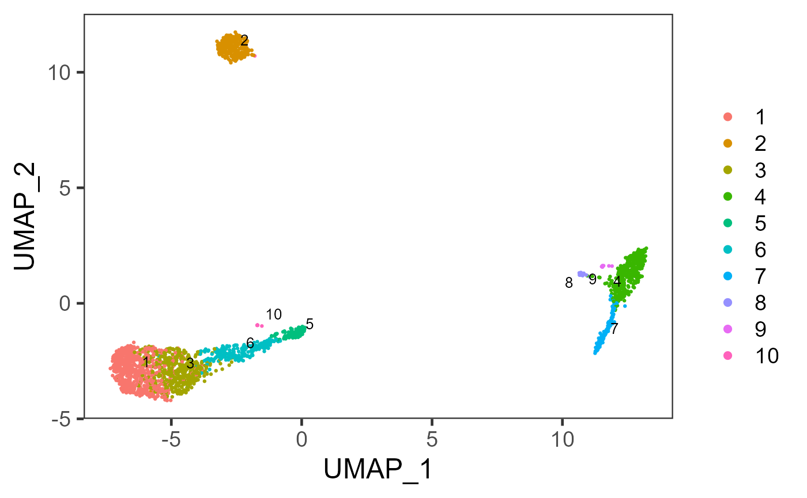
Marker Detection And Differential Expression
Marker Detection
Users can next perform marker detection process with clusters labeled, or any other types of reasonable grouping of similar biological state of cells annotated in colData slot. SCTK finds markers for each cluster by running DE analysis on one cluster against all other clusters and iterating the same process for each cluster.
sce <- findMarkerDiffExp(sce, useAssay = "logcounts", method = "wilcox",
cluster = "cluster",
log2fcThreshold = 0, fdrThreshold = 0.05,
minClustExprPerc = 0, maxCtrlExprPerc = 1,
minMeanExpr = 0)By running findMarkerDiffExp(), SCTK stores a data.table of marker table to the matadata slot of the SCE object. The marker table will include all detected markers for each cluster and statistical values associated to each marker. To fetch the table, users can use the command below, and even add filtering parameters.
topMarkers <- findMarkerTopTable(sce, topN = 1, log2fcThreshold = 0, fdrThreshold = 0.05,
minClustExprPerc = 0.5, maxCtrlExprPerc = 0.4,
minMeanExpr = 0)
head(topMarkers, 10)## Gene Log2_FC Pvalue FDR cluster clusterExprPerc
## 19802 CD3D 0.8552090 1.036505e-82 9.980320e-80 1 0.8590705
## 30657 CD79A 2.2762371 3.177726e-145 2.600810e-141 2 0.9337349
## 87641 IL7R 0.6529081 7.313849e-38 1.995340e-34 3 0.7164835
## 1956 S100A9 4.3355126 1.136289e-197 1.859991e-193 4 0.9952941
## 31076 NKG7 4.2560640 1.788630e-76 5.855618e-72 5 1.0000000
## 268251 CCL5 3.0025318 8.740971e-111 2.861619e-106 6 0.9702602
## 106091 LST1 2.8570975 1.057570e-91 1.154091e-87 7 1.0000000
## 288182 CST3 3.2687915 1.247754e-14 6.808163e-11 8 1.0000000
## 7697 PPBP 5.6247915 2.841503e-07 1.621470e-03 9 1.0000000
## 83561 HMGB2 2.3854520 3.434666e-05 3.407397e-02 10 0.8888889
## ControlExprPerc clusterAveExpr
## 19802 0.38850081 1.562329
## 30657 0.04098361 2.317671
## 87641 0.32657984 1.146453
## 1956 0.22586781 4.671252
## 31076 0.25010491 4.793217
## 268251 0.22930500 3.449170
## 106091 0.29987185 3.438184
## 288182 0.38815526 4.335429
## 7697 0.02382844 5.651197
## 83561 0.31480746 2.765561For visualization, SCTK has a specific heatmap plotting function for detected markers. The heatmap will take the log-normalized feature expression matrix for the values, and subset the features to only the top markers of each cluster. For the organization of the heatmap, the function groups the markers by the belonging to the clusters, and groups the cells, obviously, by clusters. Inside the grouping, the function finally performs the default hierarchical clustering.
plotMarkerDiffExp(sce, topN = 5, log2fcThreshold = 0,
fdrThreshold = 0.05, minClustExprPerc = 0.5,
maxCtrlExprPerc = 0.4, minMeanExpr = 0,
rowLabel = TRUE)
Customized Differential Expression Analysis
As we can easily tell from the heatmap above, “cluster 1” and “cluster 3” are having a very similar expression profile across the top markers detected. In order to further explore the difference between these two clusters, or any other two reasonable groups of cells, user can use the function runDEAnalysis().
runDEAnalysis() is a generic function for performing differential expression (DE) analysis between two selected groups of cells. This is also used by findMarkerDiffExp(). By running DE analysis, the function will take the normalized read count data and perform statistical analysis to discover quantitative changes in expression levels between selected groups. See here for the detail of running DE analysis with SCTK.
There are multiple ways to specify the groups of cells to be compared: by either directly specifying indices of cells, or selecting groups of cells with a categorical variable in colData. Additionally, runDEAnalysis() requires a relatively sophisticated inputs for naming the analyses, including the names of the two groups, and the name of one analysis, though these are not necessary for calling the algorithms alone. By requiring these, the results of the analyses can be stored with human readable identifiers and within one single SCE object, and can be more manageable. See the DE documentation for the detail.
sce <- runDEAnalysis(inSCE = sce, method = "wilcox", useAssay = "logcounts",
class = "cluster", classGroup1 = c(1), classGroup2 = c(3),
groupName1 = "cluster1", groupName2 = "cluster3",
analysisName = "cluster1_VS_3")Similarly to the marker detection section, SCTK also has a DE analysis specific heatmap plotting function, plotDEGHeatmap(). Here, users can just easily enter the analysisName specified for one run and the function will automatically arrange the output. The heatmap is also splitted into a “checker board”, by the “conditions” (i.e. the groups selected when running runDEAnalysis()) and the “regulation” (i.e. “up” if the log2 fold change is positive in “group1” against “group2”).
plotDEGHeatmap(sce, useResult = "cluster1_VS_3", rowLabel = TRUE)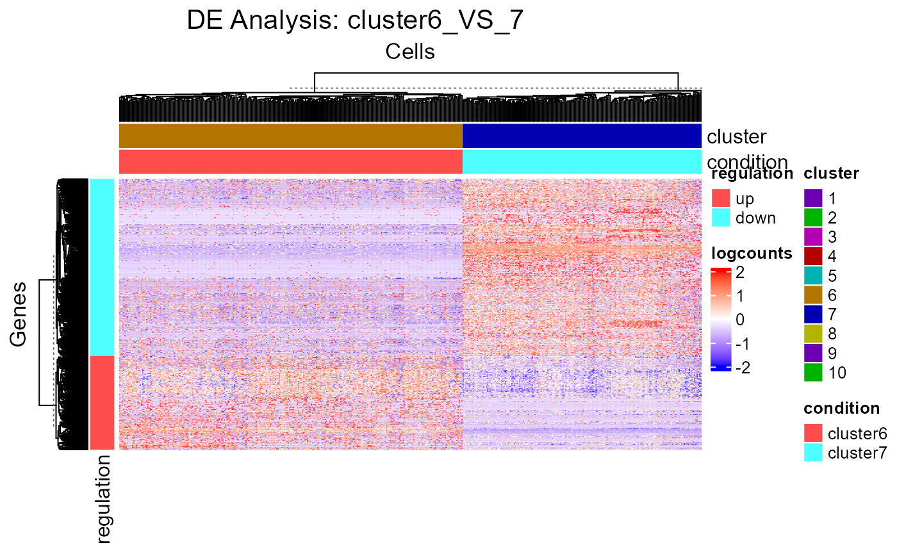
Additionally, the input matrix for DE analysis can be specified with either useAssay or useReducedDim. When one of them is specified, the other has to be NULL, to avoid ambiguity. For example, when users perform a pathway analysis and get a score matrix stored in reducedDims slot, DE analysis can be performed on this score matrix. See example.
Cell Type Labeling
SCTK adopts SingleR method for labeling the cell types, and wraps the function in runSingleR(). Briefly, it labels each cell (or cluster) in users’ datasets basing on similarity to a reference datasets. SingleR has recommended some datasets, so we enable choosing abbreviation name of them in argument useBltinRef. Please click on the function name for usage detail.
Note: Choosing a reference from the recommended builtin references would also require some prior knowledge of user data. Users should choose a reference that covers the cell types possibly exist in user dataset. SingleR works by scoring the similarity to each cell type and assigning a cell type by the highest score, regardless of how low the score is. Thus a beta cell from pancrea data cound even be wrongly labeled as a platelet if using a blood cell reference.
sce <- runSingleR(sce, useAssay = "logcounts", level = "fine")The result of labeling will again be saved to colData slot of the SCE object. There will be multiple types of information being stored, including a scoring matrix named by "SingleR_{ref}_{level}_scores", where {ref} refers to the reference selected, {level} refers to the level argument being passed to the function. And three "SingleR_{ref}_{level}_{typeOfLabels}" columns, where {typeOfLabels} includes first.labels, labels, pruned.labels. For the difference, please refer to ?SingleR::classifySingleR.
We can also plot the labeling on to the UMAP we got previously.
plotSCEDimReduceColData(sce, colorBy = "SingleR_hpca_fine_pruned.labels",
reducedDimName = "UMAP")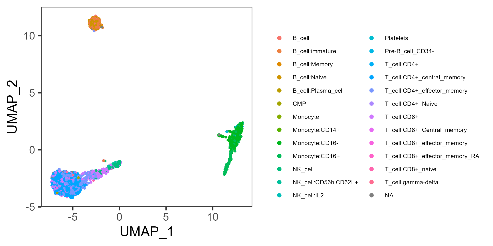
Differential Abundance
The goal of the differential abundance analysis is to determine if categorical variables such as phenotype or sample (e.g. treatment or control) are enriched in different cell clusters using the Fisher’s exact test (FET). Any categorical variables in colData(sce) can be used by passing the variable name to argument cluster or variable. Categories in the phenotype variable (used for variable) can be passed to case or control. For this example, we try to examine whether there are any cell clusters enriched in an annotated cell type using SingleR.
# Returns a vector where TRUE for a type of NK cell
isNKCell <- startsWith(colData(sce)$SingleR_hpca_fine_pruned.labels, "NK_cell")
# Returns a vector where TRUE for a type of T cell
isTCell <- startsWith(colData(sce)$SingleR_hpca_fine_pruned.labels, "T_cell")
# Make up a variable with only categories of "NK_cell", "T_cell" and "Other".
colData(sce)$cell_type <- ifelse(isNKCell, "NK_cell", "Other")
colData(sce)$cell_type[isTCell] <- "T_cell"
colData(sce)$cell_type[is.na(colData(sce)$cell_type)] <- "Other"
# Run differential abundance test
sce <- diffAbundanceFET(sce, cluster = "cluster",
variable = "cell_type",
case = "NK_cell", control = "T_cell",
analysisName = "NK_VS_T")Users can get the table of result with the method below, using the analysisName specified when running the analysis.
getDiffAbundanceResults(sce, analysisName = "NK_VS_T")| Cluster | Number of cells in cluster and in T_cell | Number of cells NOT in cluster and in T_cell | Number of cells in cluster and in NK_cell | Number of cells NOT in cluster and in NK_cell | Fraction of cells in cluster and in T_cell | Fraction of cells NOT in cluster and in T_cell | Fraction of cells in cluster and in NK_cell | Fraction of cells NOT in cluster and in NK_cell | Odds_Ratio | Pvalue | FDR |
|---|---|---|---|---|---|---|---|---|---|---|---|
| 1 | 653 | 722 | 1 | 148 | 0.474909 | 0.525 | 0.00671 | 0.993 | 1.34e+02 | 2.74e-37 | 1.37e-36 |
| 2 | 1 | 1374 | 0 | 149 | 0.000727 | 0.999 | 0.00000 | 1.000 | Inf | 1.00e+00 | 1.00e+00 |
| 3 | 452 | 923 | 0 | 149 | 0.328727 | 0.671 | 0.00000 | 1.000 | Inf | 1.10e-24 | 3.65e-24 |
| 4 | 0 | 1375 | 0 | 149 | 0.000000 | 1.000 | 0.00000 | 1.000 | 0.00e+00 | 1.00e+00 | 1.00e+00 |
| 5 | 22 | 1353 | 122 | 27 | 0.016000 | 0.984 | 0.81879 | 0.181 | 3.68e-03 | 7.85e-129 | 7.85e-128 |
| 6 | 243 | 1132 | 24 | 125 | 0.176727 | 0.823 | 0.16107 | 0.839 | 1.12e+00 | 7.34e-01 | 1.00e+00 |
| 7 | 0 | 1375 | 0 | 149 | 0.000000 | 1.000 | 0.00000 | 1.000 | 0.00e+00 | 1.00e+00 | 1.00e+00 |
| 8 | 0 | 1375 | 0 | 149 | 0.000000 | 1.000 | 0.00000 | 1.000 | 0.00e+00 | 1.00e+00 | 1.00e+00 |
| 9 | 0 | 1375 | 0 | 149 | 0.000000 | 1.000 | 0.00000 | 1.000 | 0.00e+00 | 1.00e+00 | 1.00e+00 |
| 10 | 4 | 1371 | 2 | 147 | 0.002909 | 0.997 | 0.01342 | 0.987 | 2.15e-01 | 1.10e-01 | 2.74e-01 |
Alternatively, users can choose to directly make a plot using the two variables and the function plotClusterAbundance() will automatically calculate the statistic and visualize the result. The proportion or count of each category in each cluster will be displayed in stacked bar plots:
plotClusterAbundance(sce, cluster = "cluster", variable = "cell_type")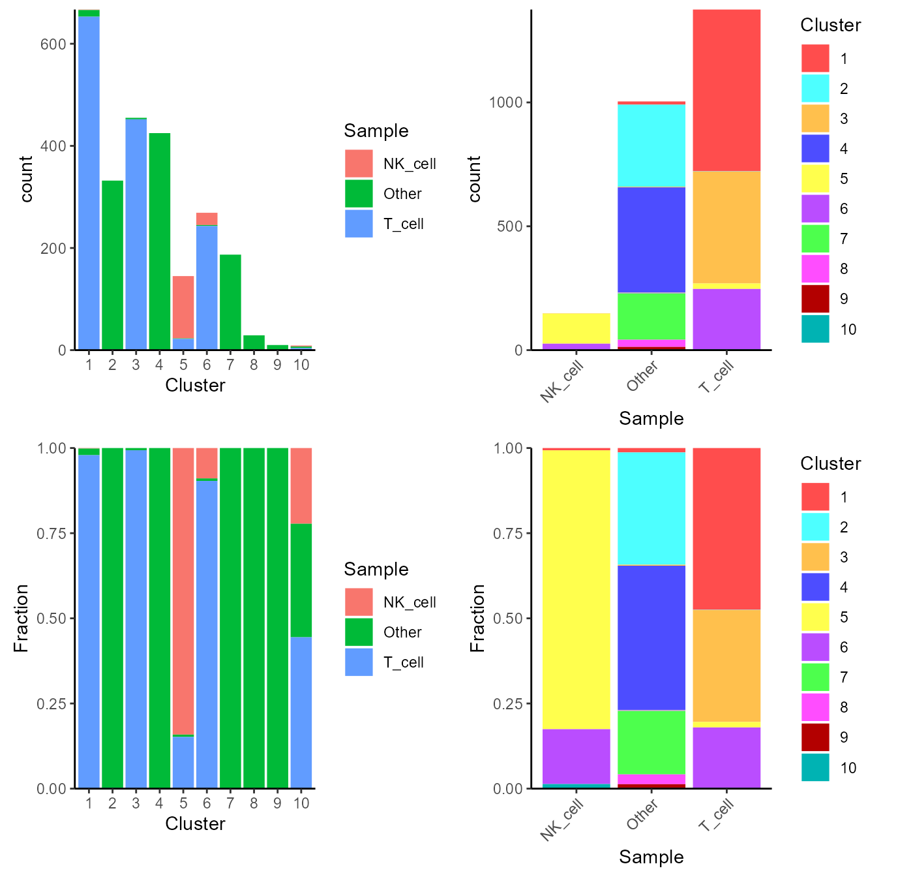
Pathway Analysis
For the purpose of gene set enrichment (GSE) analysis, SCTK imports VAM and GSVA as options. Both of them work by loading some user-defined gene sets (more about loading gene sets), and calculating the enrichment score of each gene set in each cell. Here we will go through calling VAM to inspect the enrichment of the hallmark gene sets available in MSigDB database.
sce <- importGeneSetsFromMSigDB(sce, categoryIDs = "H", species = "Homo sapiens")
sce <- runVAM(sce, geneSetCollectionName = "H", useAssay = "logcounts")To visualize the result, we simply adopt a violin plot to show the distribution of the CDF scores of the cells, which can be, optionally, grouped by the cluster labels.
hallmark <- "HALLMARK_INFLAMMATORY_RESPONSE"
plotPathway(sce, resultName = "VAM_H_CDF", geneset = hallmark, groupBy = "cluster")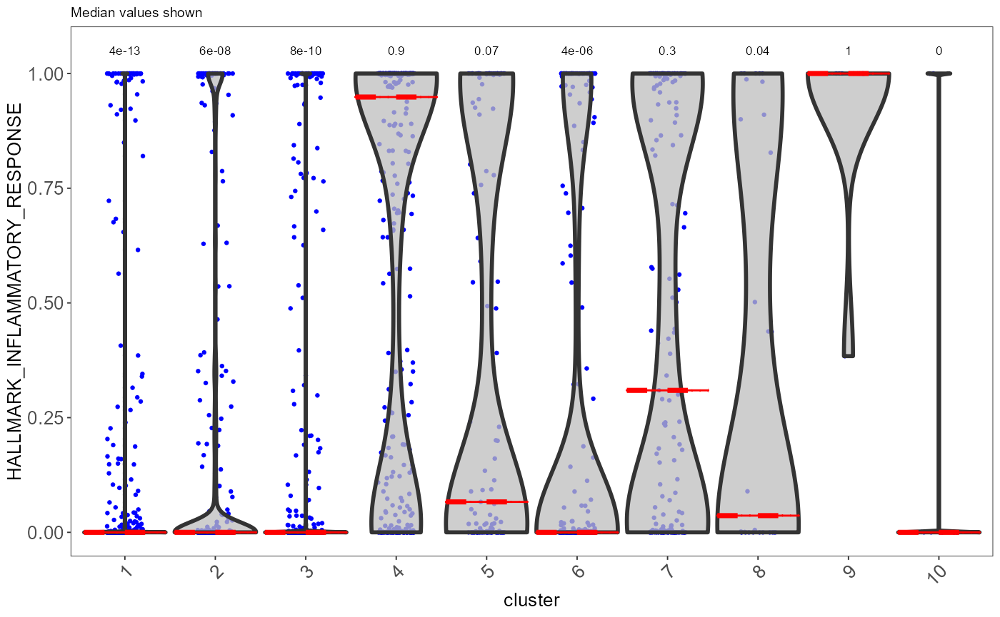
Note that available options for argument resultName and geneset can be printed with getter functions below.
getPathwayResultNames(inSCE = sce)
getGenesetNamesFromCollection(inSCE = sce, geneSetCollectionName = "H")Note: In the current version of SCTK, the returned score matrices from either VAM or GSVA are stored in the
reducedDimsslot, since the feature dimensions are for the gene sets instead of the genes or subsets of genes. In the future, SCTK will adopt other types of data container for simpler operation on different types of feature sets.
Performing DE Analysis on Pathway Analysis Scores
SCTK allows users to select the score matrix from pathway analysis to perform differential expression analysis. In this process, each geneset will be treated as the feature/gene, and comparison groups can still be set in the same way as introduced in DE analysis section.
sce <- runDEAnalysis(inSCE = sce, method = "wilcox",
useAssay = NULL, useReducedDim = "VAM_H_CDF",
class = "cluster", classGroup1 = c(1, 3), classGroup2 = c(4),
groupName1 = "T_cells", groupName2 = "monocytes",
analysisName = "T_cells_VS_monocytes_VAM_H_CDF")
plotDEGHeatmap(sce, useResult = "T_cells_VS_monocytes_VAM_H_CDF",
rowLabel = TRUE, rowTitle = "Geneset")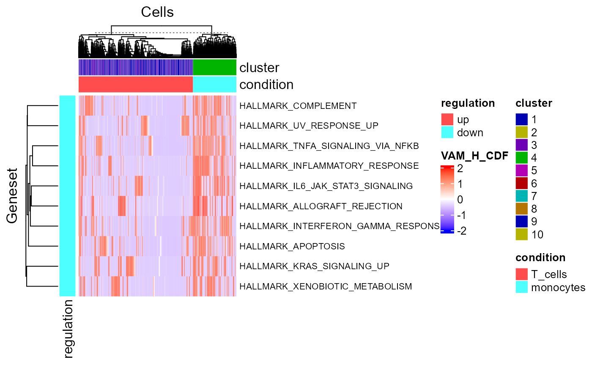